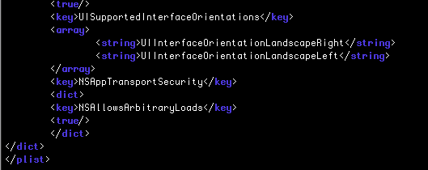

‹ Google Play Games Services Doc Home
Google Play Games Services Integration Guide
For the Javascript version of cocos2d-x v3.x - (all other versions)
Integration
Open a terminal and use the following command to install the SDKBOX Google Play Games Services plugin. Make sure you setup the SDKBOX installer correctly.
$ sdkbox import googleplay
After Installation
Android
Update AndroidManifest.xml
Add this meta-data tag to your AndroidManifest.xml
<meta-data android:name="com.google.android.gms.games.APP_ID"
android:value="@string/google_app_id" />
Update string.xml
Add this entry to proj.android/res/values/string.xml
<string name="google_app_id">777734739048</string>
Replace google_app_id value with your own App Id.
iOS
Set a rootview controller for GPG:
Update proj.ios_mac/ios/RootViewController.h
Add this:
#import <GoogleSignIn/GoogleSignIn.h>
// Change RootViewController class definition to:
@interface RootViewController : UIViewController<GIDSignInUIDelegate>
Set Google Play signin listeners
Update proj.ios_mac/ios/AppController.mm
- Add this method:
- (BOOL)application:(UIApplication *)app openURL:(NSURL *)url options:(NSDictionary *)options {
return [[GIDSignIn sharedInstance] handleURL:url
sourceApplication:options[UIApplicationOpenURLOptionsSourceApplicationKey]
annotation:options[UIApplicationOpenURLOptionsAnnotationKey]];
}
- In this method:
(BOOL)application:(UIApplication *)application didFinishLaunchingWithOptions:(NSDictionary *)launchOptions
add a call to (before return YES):
// _viewController could also be named
// viewController, depending of the project type.
[GIDSignIn sharedInstance].uiDelegate = _viewController;
Add URL types
Add the following URL types under your project > Info > URL Types
-
URL 1:
- Identifier:
com.google.ReverseClientId - Url schemes:
com.googleusercontent.apps.777734739048-cdkbeieil19d6pfkavddrri5o19gk4ni(use this as sample, or put your very own application’s url scheme)
- Identifier:
-
URL 2:
- Identifier:
com.google.BundleId - URL schemes:
com.sdkbox.gpg(use this as sample or put your own application’s bundle id)
- Identifier:
Further info
For more information check out the official documentation
Important Notice
Please make sure the following settings in your project for plugin to function correctly.
Disable App Transport Security
Adding the following entry to the info.plist file:
<key>NSAppTransportSecurity</key>
<dict>
<key>NSAllowsArbitraryLoads</key>
<true/>
</dict>
It should look something like this:

Disable Bitcode support
You have to turn off Bitcode support. If you don't cocos2d-x will fail to build.
Set your game requires full screen
If your game doesn't support all screen orientations you will need to check Requires full screen in Xcode. If you do not, your app will fail Apple's submission process.
Whitelist canOpenURL function
This depends on what plugins are in your project. You may need to add the required entry to the info.plist, under LSApplicationQueriesSchemes.
Usage
Pre-requisites
Your must create your app on Google Play Developer console and all the services must be explicitly enabled and configured in the console.
- Please follow setup guide to setup Google Play Games Services for your game.
- After the setup, please follow config guide to enable different Games Services for your game.
Note: Google Play Games Services will use your release keystore by default, if you want to test your game in debug settings, please link an additional app with debug keystore
Register Javascript Functions
You need to register all the Google Play Games JS functions with cocos2d-x before using them.
To do this:
* Modify ./frameworks/runtime-src/Classes/AppDelegate.cpp to include the following headers:
#include "PluginSdkboxGooglePlay.hpp"
- Modify
./frameworks/runtime-src/Classes/AppDelegate.cppmake sure to call:
sc->addRegisterCallback(register_all_PluginSdkboxGooglePlay);
Initialize Google Play Games (GPG)
Google Play initialization is thorughout a gpg.Builder object.
This is a valid copy-and-paste example for authenticating into the library:
var config = new gpg.PlatformConfiguration();
config.SetClientID('777734739048-cdkbeieil19d6pfkavddrri5o19gk4ni.apps.googleusercontent.com');
new gpg.GameServices.Builder()
.SetOnAuthActionStarted( function( result ) {
// 2
})
.SetOnAuthActionFinished( function( result ) {
// 3
if( gpg.IsSuccess(result.AuthStatus) ) {
// 4
_signed_in = true;
}
else {
// 5
_signed_in = false;
}
})
.SetLogging( gpg.LogLevel.INFO ) // 6
.EnableSnapshots() // 7
.Create( config, function( game_services ) {
// 8
} );
Let's dive into this process step by step.
Step 1 Initialization
Create a gpg.PlatformConfiguration object. The client id will be specific for your application, and only needed on iOS.
It is thus an optional call, but won't hurt having it set for Android as well.
This object is needed to create a GameServices object, which is the object that will proxy to the whole Google Play library objects.
The GPG authentication process, either sign-in or sign-out, spans into two phases:
Step 2 Auth started.
This function needs a callback of the form:
/**
* @typedef {{AuthOperation:gpg.AuthOperation}}
*/
var AuthActionStartedCallbackParams;
/**
* @callback AuthActionStartedCallback
* @param {AuthActionStartedCallbackParams} result;
*/
This function is mostly informative. See gpg.AuthOperation enum for more details.
Step 3 Auth finished.
This function needs a callback of the form:
/**
* @typedef {{AuthOperation:number, AuthStatus:number}}
*/
var AuthActionFinishedCallbackParams;
/**
* @callback AuthActionFinishedCallback
* @param {AuthActionFinishedCallbackParams} result;
*/
The callback be invoked with the operation type AuthOperation :sign-in or sign-out and the operation result AuthStatus.
This steps, is very important since it will tell whether the user got authenticated // 4 or not // 5.
The gpg.IsSuccess(...) will be the common idiom to verify whether an operation's been succesful or not.
Step 4
This will be a good point to get local user information, as well as modify the UI to signal authorized.
Step 5
Things did not work as expected.
Step 6
This is an optional step, but worth mentioning since this is the only place where GPG loggin capabilities can be controlled from.
This is an optional step.
Step 7
If your game expects to save games on the cloud, this is step would be mandatory, and optional otherwise.
Step 8
Until this steps, all previous code is authentication set up.
This Create call is the actual executable code to be authenticated, notified apropriately and agin access to the GPG objects.
GPG interation will happen by means of a gpg.GameServices object. This object will eventually been passed to the Create method's callback if everything went ok.
Signed in.
After following the previous code, your system can be signed_in or not to GPG. A common idiom about how to deal with a login ui or sign out, could be this code:
if ( _game_services ) {
if ( _signed_in ) {
_game_services.SignOut();
} else {
_game_services.StartAuthorizationUI();
}
}
gpg.GameServices
An instance of this object will be granted once the Authentication process works. It will grant access to the GPG library functionality, by exposing the following:
gpg.GameServices.Players and gpg.GameServices.Stats
Gets and sets various player-related data.
For example, gives information about the current logged-in player gpg.GameServices.Players.FetchSelf, or about any player identified by an id gpg.GameServices.Players.Fetch.
Also, player stats can be obtained with interesting information such as a player's average session length, number of days since last played or the number of purchased he's done on the game.
gpg.GameServices.Snapshots
The Saved Games service gives you a convenient way to save your players' game progression to Google's servers. Your game can retrieve the saved game data to allow returning players to continue a game at their last save point from any device. The Saved Games service makes it possible to synchronize a player's game data across multiple devices.
For more intormation refer to: https://developers.google.com/games/services/common/concepts/savedgames
gpg.GameServices.Leaderboards
Leaderboards can be a fun way to drive competition among your players, both for your most hardcore fans (who will be fighting for the top spot in a public leaderboard) and for your more casual players (who will be interested in comparing their progress to their friends').
For example, it gives access to metadata about a leaderboard gpg.GameServices.Leaderboards.Fetch, pages with user's scores gpg.GameServices.Leaderboards.FetchScorePage, etc.
For more information refer to: https://developers.google.com/games/services/common/concepts/leaderboards
gpg.GameServices.Achievements
Achievements can be a great way to increase your users' engagement within your game. You can implement achievements in your game to encourage players to experiment with features they might not normally use, or to approach your game with entirely different play styles. Achievements can also be a fun way for players to compare their progress with each other and engage in light-hearted competition.
For example, you could unlock gpg.GameServices.Achievements.Unlock, increment gpg.GameServices.Achievements.Increment or reveal an achievement gpg.GameServices.Achievements.Reveal.
For more information refer to: https://developers.google.com/games/services/common/concepts/achievements
gpg.GameServices.Quests, gpg.GameServices.Events
The Google Play Games events service allows you to collect cumulative data generated by your players during gameplay and store them in Google's servers for game analytics. You can flexibly define what player data your game should collect; this might include metrics such as how often:
- Players use a particular item
- Players reach a certain level
- Players perform some specific game action
You can use the events data as feedback on how to improve your game. For example, you can adjust the difficulty level of certain levels in your game that players are finding too hard to complete.
For example you could accept a Quest gpg.GameServices.Quests.Accept or claim milestones on a given quest gpg.GameServices.Quests.AcceptMilestone.
For more information refer to: https://developers.google.com/games/services/common/concepts/quests
gpg.GameServices.TurnBasedMultiplayer
In a turn-based multiplayer game, a single shared state is passed between multiple players, and only one player has permission to modify the shared state at a time. Players take turns asynchronously according to an order of play determined by the game. Your game can use the turn-based multiplayer API provided by Google Play games services to manage the following tasks:
- Invite players to join a turn-based multiplayer match, look for random players to be automatically matched to your game, or a combination of both. Google Play games services allows you to host up to eight participants in a match.
- Store participant and match state information on Google's servers and share updated match data asynchronously with all participants over the lifecycle of the turn-based match.
- Send match invitation and turn notifications to players. Notifications appear on all devices on which the player is logged in (unless disabled).
For more information refer to: https://developers.google.com/games/services/common/concepts/turnbasedMultiplayer
gpg.GameServices.RealTimeMultiplayer
Your game can use the real-time multiplayer API in Google Play games services to connect multiple players together in a single game session and transfer data messages between connected players. Using the real-time multiplayer API can help to simplify your game development effort because the API handles the following tasks on your behalf:
- Manages network connections to create and maintain a real-time multiplayer room (a virtual construct that enables network communication between multiple players in the same game session and lets players send data directly to one another).
- Provides a player selection user interface (UI) to invite players to join a room, look for random players for auto-matching, or a combination of both.
- Stores participant and room state information on the Google Play games services servers during the lifecycle of the real-time multiplayer game.
- Sends room invitations and updates to players. Notifications appear on all devices on which the player is logged in (unless disabled).
For more information refer to: https://developers.google.com/games/services/common/concepts/realtimeMultiplayer
Nearby Connections (Android only)
API Reference
All the javascript code is already annotated and will populate intellisense from all the major Javascript IDEs like IntelliJ, Webstorm, Visual Studio Code, etc.
Enum values
/**
* Here just for reference, you should necer refer to these enum values.
*
* @enum {number}
*/
var BaseStatus = {
VALID : 1,
VALID_BUT_STALE : 2,
VALID_WITH_CONFLICT : 3,
FLUSHED : 4,
ERROR_LICENSE_CHECK_FAILED : -1,
ERROR_INTERNAL : -2,
ERROR_NOT_AUTHORIZED : -3,
ERROR_VERSION_UPDATE_REQUIRED : -4,
ERROR_TIMEOUT : -5,
ERROR_CANCELED : -6,
ERROR_MATCH_ALREADY_REMATCHED : -7,
ERROR_INACTIVE_MATCH : -8,
ERROR_INVALID_RESULTS : -9,
ERROR_INVALID_MATCH : -10,
ERROR_MATCH_OUT_OF_DATE : -11,
ERROR_UI_BUSY : -12,
ERROR_QUEST_NO_LONGER_AVAILABLE : -13,
ERROR_QUEST_NOT_STARTED : -14,
ERROR_MILESTONE_ALREADY_CLAIMED : -15,
ERROR_MILESTONE_CLAIM_FAILED : -16,
ERROR_REAL_TIME_ROOM_NOT_JOINED : -17,
ERROR_LEFT_ROOM : -18
};
/**
* @enum {number}
*/
gpg.AuthOperation : {
SIGN_IN : 1,
SIGN_OUT : 2
}
/**
* @enum {number}
*/
gpg.AuthStatus : {
VALID : BaseStatus.VALID,
ERROR_INTERNAL : BaseStatus.ERROR_INTERNAL,
ERROR_NOT_AUTHORIZED : BaseStatus.ERROR_NOT_AUTHORIZED,
ERROR_VERSION_UPDATE_REQUIRED : BaseStatus.ERROR_VERSION_UPDATE_REQUIRED,
ERROR_TIMEOUT : BaseStatus.ERROR_TIMEOUT
}
/**
* The set of possible values representing the result of a UI attempt.
*
* @enum {number}
*/
gpg.UIStatus : {
VALID : BaseStatus.VALID,
ERROR_INTERNAL : BaseStatus.ERROR_INTERNAL,
ERROR_NOT_AUTHORIZED : BaseStatus.ERROR_NOT_AUTHORIZED,
ERROR_VERSION_UPDATE_REQUIRED : BaseStatus.ERROR_VERSION_UPDATE_REQUIRED,
ERROR_TIMEOUT : BaseStatus.ERROR_TIMEOUT,
ERROR_CANCELED : BaseStatus.ERROR_CANCELED,
ERROR_UI_BUSY : BaseStatus.ERROR_UI_BUSY,
ERROR_LEFT_ROOM : BaseStatus.ERROR_LEFT_ROOM
}
/**
* @enum {number}
*/
gpg.LogLevel : {
VERBOSE : 1,
INFO : 2,
WARNING : 3,
ERROR : 4
}
/**
* @enum {number}
*/
gpg.ImageResolution : {
ICON: 1,
HI_RES: 2
}
/**
* @enum {number}
*/
gpg.SnapshotConflictPolicy : {
MANUAL : 1,
LONGEST_PLAYTIME : 2,
LAST_KNOWN_GOOD : 3,
MOST_RECENTLY_MODIFIED : 4,
HIGHEST_PROGRESS : 5,
DefaultConflictPolicy : 4 // MOST_RECENTLY_MODIFIED
}
/**
* @enum {number}
*/
gpg.ResponseStatus : {
VALID : BaseStatus.VALID,
VALID_BUT_STALE : BaseStatus.VALID_BUT_STALE,
ERROR_LICENSE_CHECK_FAILED : BaseStatus.ERROR_LICENSE_CHECK_FAILED,
ERROR_INTERNAL : BaseStatus.ERROR_INTERNAL,
ERROR_NOT_AUTHORIZED : BaseStatus.ERROR_NOT_AUTHORIZED,
ERROR_VERSION_UPDATE_REQUIRED : BaseStatus.ERROR_VERSION_UPDATE_REQUIRED,
ERROR_TIMEOUT : BaseStatus.ERROR_TIMEOUT
}
/**
* @enum {number}
*/
gpg.DataSource : {
CACHE_OR_NETWORK: 1,
NETWORK_ONLY: 2
}
/**
* @enum {number}
*/
gpg.LeaderboardOrder : {
LARGER_IS_BETTER: 1,
SMALLER_IS_BETTER: 2,
INVALID : -1
}
/**
* Values specifying whether rankings are displayed on a leaderboard in order
* of score or player.
*
* @enum {number}
*/
gpg.LeaderboardStart : {
TOP_SCORES: 1,
PLAYER_CENTERED: 2,
INVALID : -1
}
/**
* Values that specify the period of time that a leaderboard covers.
*
* @enum {number}
*/
gpg.LeaderboardTimeSpan : {
DAILY: 1,
WEEKLY: 2,
ALL_TIME: 3,
INVALID : -1
}
/**
* Values that specify whether a leaderboard can be viewed by anyone with a
* Google+ account (public), or only members of a player's Google+ circles
* (social).
*
* @enum {number}
*
*/
gpg.LeaderboardCollection : {
PUBLIC: 1,
SOCIAL: 2,
INVALID : -1
}
/**
* Values used to specify achievement type.
* A player makes gradual progress (steps) toward an incremental achievement.
* He or she completes a standard achievement in a single step.
*
* @enum {number}
*/
gpg.AchievementType : {
STANDARD : 1,
INCREMENTAL : 2,
INVALID : -1
}
/**
* Values used to specify achievement state.
* A hidden achievement is one whose existence a player has not yet discovered.
* make him or her aware of it.
* A revealed achievement is one that the player knows about, but has not yet
* earned.
* An unlocked achievement is one that the player has earned.
*
* @enum {number}
*/
gpg.AchievementState : {
HIDDEN : 1,
REVEALED : 2,
UNLOCKED : 3,
INVALID : -1
}
/**
* A struct containing flags which can be provided to
* QuestManager.FetchList in order to filter the results returned.
*
* @enum {number}
*/
gpg.QuestFetchFlags : {
UPCOMING: 1 << 0,
OPEN: 1 << 1,
ACCEPTED: 1 << 2,
COMPLETED: 1 << 3,
COMPLETED_NOT_CLAIMED: 1 << 4,
EXPIRED: 1 << 5,
ENDING_SOON: 1 << 6,
FAILED: 1 << 7,
ALL: -1
}
/**
* Values used to specify the <code>Quest</code> state.
*
* @enum {number}
*/
gpg.QuestState : {
UPCOMING: 1,
OPEN: 2,
ACCEPTED: 3,
COMPLETED: 4,
EXPIRED: 5,
FAILED: 6,
INVALID : -1
}
/**
* Values used to specify the QuestMilestone state.
*
* @enum {number}
*/
gpg.QuestMilestoneState : {
NOT_STARTED: 1, // Note that this value is new in v1.2.
NOT_COMPLETED: 2,
COMPLETED_NOT_CLAIMED: 3,
CLAIMED: 4,
INVALID : -1
}
/**
* Values specifying whether an event is hidden to the player,
* or visible to them.
*
* @enum {number}
*/
gpg.EventVisibility : {
HIDDEN : 1,
REVEALED : 2
}
/**
* Values which identify the type of a <code>MultiplayerInvitation</code>.
*
* @enum {number}
*/
gpg.MultiplayerInvitationType : {
TURN_BASED : 1,
REAL_TIME : 2,
INVALID : -1
}
/**
* Values representing the current status of a RealTimeRoom.
*
* @enum {number}
*/
gpg.RealTimeRoomStatus : {
INVITING : 1,
CONNECTING : 2,
AUTO_MATCHING : 3,
ACTIVE : 4,
DELETED : 5,
INVALID : -1
}
/**
* Values used to specify the state of a participant within a
* <code>TurnBasedMatch</code>.
*
* @enum {number}
*/
gpg.ParticipantStatus : {
INVITED: 1,
JOINED: 2,
DECLINED: 3,
LEFT: 4,
NOT_INVITED_YET: 5,
FINISHED: 6,
UNRESPONSIVE: 7,
INVALID: -1
}
/**
* Values used to specify the outcome of a <code>TurnBasedMatch</code>
* for a participant.
*
* @enum {number}
*/
gpg.MatchResult : {
DISAGREED: 1,
DISCONNECTED: 2,
LOSS: 3,
NONE: 4,
TIE: 5,
WIN: 6,
INVALID: -1
}
/**
* Values used to specify the status of a <code>TurnBasedMatch</code> for the
* local participant.
*
* @enum {number}
*/
gpg.MatchStatus : {
INVITED: 1,
THEIR_TURN: 2,
MY_TURN: 3,
PENDING_COMPLETION: 4,
COMPLETED: 5,
CANCELED: 6,
EXPIRED: 7,
INVALID: -1
}
Utility Objects
These objects store and hold GPG status information, like a leaderboard descriptor, or a player's info.
/**
* Leaderboard metadata class
*
* @class
* @constructor
*/
gpg.Leaderboard : {
iconURL : string,
id : string,
name : string,
order : number,
valid : boolean
}
/**
* @class
* @memberOf gpg
* @constructor
*/
gpg.SnapshotMetadata : {
filename : string,
coverImageURL: string,
description: string,
valid: boolean,
lastModifiedTime: number,
playedTime: number
}
/**
* Holds a player level info descriptor.
*
* @class
* @memberOf gpg
* @constructor
*/
gpg.PlayerLevel : {
valid: boolean,
levelNumber:number,
minimumXP: number,
maximumXP: number
}
/**
* A local player wrapper object.
* This object can be safely cached for information requests on the current logged-in player.
*
* @class Player
* @memberOf gpg
* @constructor
*/
gpg.Player : {
name: string,
id: string,
avatarUrlIconRes: string,
avatarUrlHiRes: string,
hasLevelInfo: boolean,
currentXP: number,
lastLevelUpTime: number,
title: string,
currentLevel: gpg.PlayerLevel|null,
nextLevel: gpg.PlayerLevel|null
};
/**
* A data structure that allows you to access data about a specific player.
*
* @class
* @memberOf gpg
* @constructor
*/
gpg.PlayerStats : {
/**
* Returns true when the returned PlayerStats object is populated with data
* and is accompanied by a successful response status; false for an
* unpopulated user-created PlayerStats or for a populated one accompanied by
* an unsuccessful response status.
* It must be true for the getter functions on this object to be usable.
*/
valid : boolean,
/**
* Returns whether or not this PlayerStats object has average session length
* available. It must be true for <code>averageSessionLength</code>
* to be usable.
*/
hasAverageSessionLength : boolean,
/**
* Retrieves the average session length for this player, if known.
* <code>hasAverageSessionLength</code> must be true for this function
* to be usable.
*
* @type number
*/
averageSessionLength : number,
/**
* Whether or not this PlayerStats object has churn probability
* available. It must be true for <code>churnProbability</code> to be
* usable.
*/
hasChurnProbability : boolean,
/**
* Retrieves the churn probability for this player, if known.
* <code>hasChurnProbability</code> must be true for this function
* to be usable.
*
* @type number
*/
churnProbability : number,
/**
* Whether or not this PlayerStats object has days since last played
* available. It must be true for <code>daysSinceLastPlayed</code> to be
* usable.
*/
hasDaysSinceLastPlayed : boolean,
/**
* Days since last played for this player, if known.
* <code>hasDaysSinceLastPlayed</code> must be true for this function to
* be usable.
*
* @type number
*/
daysSinceLastPlayed : -number,
/**
* Whether or not this PlayerStats object has number of purchases
* available. It must be true for <code>numberOfPurchases</code> to be
* usable.
*/
hasNumberOfPurchases : boolean,
/**
* Number of purchases for this player, if known.
* <code>hasNumberOfPurchases</code> must be true for this function to
* be usable.
*
* @type number
*/
numberOfPurchases : -number,
/**
* Whether or not this PlayerStats object has number of sessions
* available. It must return true for <code>numberOfSessions</code> to be
* usable.
*/
hasNumberOfSessions : boolean,
/**
* Number of sessions for this player, if known.
* <code>hasNumberOfSessions</code> must be true for this function to
* be usable.
*
* @type number
*/
numberOfSessions : -number,
/**
* Whether or not this PlayerStats object has session percentile
* available. It must return true for <code>sessionPercentile</code> to be
* usable.
*/
hasSessionPercentile : boolean,
/**
* Retrieves the session percentile information for this player, if known.
* <code>hasSessionPercentile</code> must be true for this function
* to be usable.
*
* @type number
*/
sessionPercentile : number,
/**
* Whether or not this PlayerStats object has spend percentile
* available. It must be true for <code>spendPercentile()</code> to be
* usable.
*/
hasSpendPercentile : boolean,
/**
* Spend percentile information for this player, if known.
* <code>hasSpendPercentile</code> must return true for this function
* to be usable.
*
* @type number
*/
spendPercentile : number
}
/**
* Quest metadata object.
* @class
* @memberOf gpg
* @constructor
*/
gpg.QuestMilestone : {
valid : boolean,
id : string,
questId : string,
eventId : string,
state : gpg.QuestMilestoneState,
currentCount : number,
targetCount : number,
completionRewardData : string
}
/**
* A single data structure allowing you to access data about the status of a
* specific quest.
*
* @class
* @memberOf gpg
* @constructor
*/
gpg.Quest : {
valid : boolean,
id : string
name : string,
description : string,
iconUrl : string,
bannerUrl : string,
currentMilestone : gpg.QuestMilestone | null,
questState : gpg.QuestState,
startTime : number,
expirationTime : number,
acceptedTime : number
}
/**
* A single data structure containing data about the status of
* a specific event. Data comprise two types: user-specific (e.g.,
* whether the user has unlocked the event), and global (e.g., event name).
*
* @class
* @memberOf gpg
* @constructor
*/
gpg.Event : {
valid : boolean,
id : string,
name : string,
description : string,
visibility : gpg.EventVisibility,
count : number
}
/**
* Achievement metadata class
*
* @class
* @memberOf gpg
* @constructor
*/
gpg.Achievement : {
currentSteps : number,
description : string,
id : string,
lastModifiedTime : number, // millis
name : string,
revealedIconUrl : string,
state : gpg.AchievementState,
totalSteps : number,
type : gpg.AchievementType,
unlockedIconUrl : string,
valid : boolean,
xp : number
}
/**
* Single data structure which allows you to access data about a player's
* score.
*
* @class
* @memberOf gpg;
* @constructor
*/
gpg.Score : {
valid : boolean,
rank : number,
value : number,
metadata : string
}
/**
* A single data structure which allows you to access a summary of score
* information.
*
* @class
* @memberOf gpg
* @constructor
*/
gpg.ScoreSummary : {
valid : boolean,
leaderboardId : string,
timeSpan : gpg.LeaderboardTimeSpan,
collection : gpg.LeaderboardCollection,
approximateNumberOfScores : number,
currentPlayerScore : gpg.Score | null
}
/**
* A class that creates an entry on a score page.
*
* @name Entry
* @memberOf gpg.ScorePage
* @constructor
*/
gpg.ScorePage.Entry : {
playerId : string,
lastModifiedTime : number, // millis
valid : boolean,
score : gpg.Score | null
}
/**
* A single data structure which allows you to access score data.
* Data include Leaderboard id, start, timespan, collection, previous
* score-page token, next score-page token, and the vector of all
* score entries.
*
* @class
* @memberOf gpg
* @constructor
*/
gpg.ScorePage.prototype = {
leaderboardId : string,
start : gpg.LeaderboardStart,
timeSpan : gpg.LeaderboardTimeSpan,
valid : boolean,
collection : gpg.LeaderboardCollection,
entries : gpg.ScorePage.Entry[] | null,
hasNextScorePage : boolean,
hasPreviousScorePage : boolean
}
Callbacks
These types define specific callbacks, callback parameters, and GameServices object's invocation parameters.
Authentication callbacks and types
/**
* @typedef {{AuthOperation:gpg.AuthOperation}}
*/
var AuthActionStartedCallbackParams;
/**
* @callback AuthActionStartedCallback
* @param {AuthActionStartedCallbackParams} result;
*/
/**
* @typedef {{AuthOperation:number, AuthStatus:number}}
*/
var AuthActionFinishedCallbackParams;
/**
* @callback AuthActionFinishedCallback
* @param {AuthActionFinishedCallbackParams} result;
*/
/**
* @callback BuilderCreateCallback
* @param game_services {gpg.GameServices}
*/
Players callbacks and types
/**
* @typedef {{ result : gpg.ResponseStatus, player? : gpg.Player }}
*/
var PlayersFetchSelfCallbackParams;
/**
* @callback PlayersFetchSelfCallback
* @param PlayersFetchSelfCallbackParams
*/
/**
* @typedef {{ data_source? : gpg.DataSource, player_id : string }}
*/
var PlayersFetchParams;
/**
* @typedef {{ result : gpg.ResponseStatus, player? : gpg.Player }}
*/
var PlayersFetchCallbackParams;
/**
* @callback PlayerFetchCallback
* @param PlayerFetchCallbackParams
*/
Snapshot callbacks and types
/**
* Snapshot UI invocation parameters.
* <code>allow_create</code> and <code>allow_delete</code> default to false.
* <code>max_snapshots</code> defaults to 10.
* <code>title</code> defaults to 'title'.
*
* @typedef {{ allow_create?:boolean, allow_delete?:boolean, max_snapshots?:number, title:string }}
*/
var tSnapshotShowSelectionUIOperationParams;
/**
* @typedef {{ result:string, metadata?:gpg.SnapshotMetadata, error_code?:number }}
*/
var tSnapshotShowSelectionUIOperationCallbackResult;
/**
* @typedef {{ filename:string, conflict_policy?:gpg.SnapshotConflictPolicy, data_source?:gpg.DataSource }}
*/
var tSnapshotLoadParams;
/**
* @typedef {{ result:gpg.ResponseStatus, metadata:gpg.SnapshotMetadata, data?:string }}
*/
var tSnapshotLoadCallbackResult;
/**
* @typedef {{ filename : string, conflict_policy? : gpg.SnapshotConflictPolicy, description : string, data : string }}
*/
var tSnapshotSaveParams;
/**
* @typedef {{ data_source? : gpg.DataSource }}
*/
var tSnapshotFetchAllParams;
/**
* @callback SnapshotShowSelectUIOperationCallback
* @param result {tSnapshotShowSelectionUIOperationCallbackResult}
*/
/**
* @callback SnapshotLoadCallback
* @param {tSnapshotLoadCallbackResult}
*/
/**
* @callback SnapshotSaveCallback
* @param {{ result:gpg.ResponseStatus, metadata:gpg.SnapshotMetadata }}
*/
/**
* @callback SnapshotFetchAllCallback
* @param {{ result:gpg.ResponseStatus, metadata_array:gpg.SnapshotMetadata[] }}
*/
/**
* @callback SnapshotDeleteCallback
* @param {{ result:'success'|'error', error_code?:number }}
*/
Leaderboard callbacks and types
/**
* @callback LeaderboardFetchCallback
* @param {LeaderboardFetchCallbackParams}
*/
/**
* @typedef {{ result : gpg.ResponseStatus, leaderboard: gpg.Leaderboard }}
*/
var LeaderboardFetchCallbackParams;
/**
* @callback LeaderboardFetchAllCallback
* @param {LeaderboardFetchAllCallbackParams}
*/
/**
* @typedef {{ result : gpg.ResponseStatus, leaderboard_array: gpg.Leaderboard[] }}
*/
var LeaderboardFetchAllCallbackParams;
/**
* @callback LeaderboardShowUICallback
* @param {LeaderboardShowUICallbackParams}
*/
/**
* @typedef {{ result : gpg.UIStatus }}
*/
var LeaderboardShowUICallbackParams;
/**
* @callback LeaderboardShowAllUICallback
* @param {LeaderboardShowAllUICallbackParams}
*/
/**
* @typedef {{ result : gpg.UIStatus }}
*/
var LeaderboardShowAllUICallbackParams;
/**
* @callback LeaderboardFetchScorePageCallback
* @param {LeaderboardFetchScorePageCallbackParams}
*/
/**
* @typedef {{ result : gpg.ResponseStatus, scorePage:gpg.ScorePage }}
*/
var LeaderboardFetchScorePageCallbackParams;
/**
* @callback LeaderboardSubmitScoreCallback
* @param {{ result : gpg.ResponseStatus }}
*/
/**
* @callback LeaderboardFetchScoreSummaryCallback
* @param {LeaderboardFetchScoreSummaryCallbackParams}
*/
/**
* @typedef {{ result : gpg.ResponseStatus, score_summary : gpg.ScoreSummary }}
*/
var LeaderboardFetchScoreSummaryCallbackParams;
/**
* @callback LeaderboardFetchAllScoreSummariesCallback
* @param {LeaderboardFetchAllScoreSummariesCallbackParams}
*/
/**
* @typedef {{ data_source? : gpg.DataSource, leaderboard_id : string }}
*/
var LeaderboardFetchParams;
/**
* @typedef {{ data_source? : gpg.DataSource, timeSpan? : gpg.LeaderboardTimeSpan, collection? : gpg.LeaderboardCollection, leaderboard_id : string }}
*/
var LeaderboardFetchScoreSummaryParams;
/**
* @typedef {{ data_source? : gpg.DataSource, leaderboard_id : string }}
*/
var LeaderboardFetchAllScoreSummariesParams;
/**
* @typedef {{ result : gpg.ResponseStatus, score_summary_array : gpg.ScoreSummary[] }}
*/
var LeaderboardFetchAllScoreSummariesCallbackParams;
/**
* @typedef {{ leaderboard_id : string, score:number, metadata?:string }}
*/
var LeaderboardSubmitScoreParams;
/**
* @typedef {{ leaderboard_id:string, data_source?:gpg.DataSource, start?:gpg.LeaderboardStart, time_span?:gpg.LeaderboardTimeSpan, collection?:gpg.LeaderboardCollection, max_items?:number }}
*/
var LeaderboardFetchScorePageParams;
/**
* @typedef {{ data_source?:gpg.DataSource, max_items?:number }}
*/
var LeaderboardFetchOtherScorePageParams;
Achievement callbacks and types
/**
* @callback AchievementFetchAllCallback
* @param AchievementFetchAllCallbackParams
*/
/**
* @typedef {{ result : gpg.ResponseStatus, achievement_array: gpg.Achievement[] }}
*/
var AchievementFetchAllCallbackParams;
/**
* @callback AchievementFetchCallback
* @param AchievementFetchCallbackParams
*/
/**
* @typedef {{ result : gpg.ResponseStatus, achievement: gpg.Achievement }}
*/
var AchievementFetchCallbackParams;
/**
* @typedef {{ achievement_id : string, data_source: gpg.DataSource }}
*/
var AchievementFetchParams;
/**
* @callback AchievementShowAllUICallback
* @param AchievementShowAllUICallbackParams
*/
/**
* @typedef {{ result : gpg.ResponseStatus }}
*/
var AchievementShowAllUICallbackParams;
/**
* @typedef {{ achievement_id : string, increment?: number }}
*/
var AchievementIncrementParams;
/**
* @typedef {{ achievement_id : string, increment?: number }}
*/
var AchievementSetStepsAtLeastParams;
Quests callbacks and types
/**
* @typedef {{ quest_id : string, data_source : gpg.DataSource }}
*/
var QuestsFetchParams;
/**
* @typedef {{ result : gpg.ResponseStatus, quest : gpg.Quest }}
*/
var QuestsFetchCallbackParams;
/**
* @callback QuestsFetchCallback
* @param QuestsFetchCallbackParams
*/
/**
* @typedef {{ result : gpg.ResponseStatus, data : gpg.Quest[] }}
*/
var QuestsFetchListCallbackParams;
/**
* @callback QuestsFetchListCallback
* @param QuestsFetchListCallbackParams
*/
/**
* @typedef {{ result : gpg.ResponseStatus, quest : gpg.Quest }}
*/
var QuestsAcceptCallbackParams;
/**
* @callback QuestsAcceptCallback
* @param QuestsAcceptCallbackParams
*/
/**
* @typedef {{ result : gpg.ResponseStatus, quest : gpg.Quest, milestone : gpg.QuestMilestone }}
*/
var QuestsClaimMilestoneCallbackParams;
/**
* @callback QuestsClaimMilestoneCallback
* @param QuestsClaimMilestoneCallbackParams
*/
/**
* @typedef {{ result : gpg.ResponseStatus, quest? : gpg.Quest }}
*/
var QuestsShowAllUICallbackParams;
/**
* @callback QuestsShowAllUICallback
* @param QuestsShowAllUICallbackParams
*/
/**
* @typedef {{ result : gpg.ResponseStatus, quest? : gpg.Quest }}
*/
var QuestsShowUICallbackParams;
/**
* @callback QuestsShowUICallback
* @param QuestsShowUICallbackParams
*/
Events callbacks and types
/**
* @typedef {{ event_id : string, data_source? : gpg.DataSource }}
*/
var EventsFetchParams;
/**
* @typedef {{ result : gpg.ResponseStatus, event : gpg.Event }}
*/
var EventsFetchCallbackParams;
/**
* @callback EventsFetchCallback
* @param EventsFetchCallbackParams
*/
/**
* @typedef {{ result : gpg.ResponseStatus, data : {event_id : gpg.Event} }}
*/
var EventsFetchAllCallbackParams;
/**
* @callback EventsFetchAllCallback
* @param EventsFetchAllCallbackParams
*/
/**
* @typedef {{ event_id : string, increment? : number }}
*/
var EventsIncrementParams;
Stats callbacks and types
/**
* @typedef {{ result : gpg.ResponseStatus, data : gpg.PlayerStats}}
*/
var StatsFetchForPlayerCallbackParams;
/**
* @callback StatsFetchForPlayerCallback
* @param StatsFetchForPlayerCallbackParams
*/
Objects
Global object
/**
* @namespace
*
* Global GPG library namespace.
*/
var gpg;
/**
*
* @param response_status {gpg.ResponseStatus|gpg.AuthStatus}
* @returns {boolean}
*/
gpg.IsSuccess = function( response_status );
gpg.PlatformConfiguration
/**
* @class PlatformConfiguration
* @memberOf gpg
* @returns {gpg.PlatformConfiguration}
* @constructor
*
* Used to create a Builder object which will return a gpg.GameServices object.
*/
PlatformConfiguration : function() {
/**
* The client id defined on the google developer console.
* @param client_id {string}
*/
this.SetClientID = function( client_id )
}
gpg.GameServices
/**
* @name GameServices
* @memberOf gpg
* @class
*
* An instance of this object will be supplied to the gpg.GameServices.Builder.Create method's callback upon successful
* GPG authentication.
*/
/**
* Allows you to explicitly check the current authorization state.
* SDK consumers are encouraged to register for AUTH_ACTION_* callbacks to
* handle authorization state changes, rather than polling.
*
* @returns {boolean}
*/
gpg.GameServices.IsAuthorized: function();
/**
* Brings up a platform-specific user authorization flow.
*/
gpg.GameServices.StartAuthorizationUI: function();
/**
* Begins the asynchronous sign-out process.
* After calling SignOut, you should not call any operations on GameServices
* until you receive the OnAuthActionFinishedCallback indicating a successful
* sign-out.
*/
gpg.GameServices.SignOut: function();
gpg.GameServices.Builder
/**
* Used for creating and configuring an instance of the GameServices class.
*
* @memberOf gpg.GameServices
* @returns {gpg.GameServices.Builder}
*/
gpg.GameServices.Builder: function (); // constructor
/**
* Registers a callback to be called when authorization has begun.
*
* @param authActionStartedCallback {AuthActionStartedCallback}
* @returns {gpg.Builder}
*/
gpg.GameServices.Builder.prototype.SetOnAuthActionStarted = function (authActionStartedCallback);
/**
* Registers a callback to be called when authorization has finished.
*
* @param authActionFinishedCallback {AuthActionFinishedCallback}
* @returns {gpg.Builder}
*/
gpg.GameServices.Builder.prototype.SetOnAuthActionFinished = function (authActionFinishedCallback);
/**
* Enable Snapshots.
* See {@link gpg.GameServices.Snapshots} for more details.
*
* @returns {gpg.Builder}
* @constructor
*/
gpg.GameServices.Builder.prototype.EnableSnapshots = function ();
/**
* Takes a platform configuration and attempts to return a newly instantiated
* GameServices object.
*
* For more information, see the documentation on IosPlatformConfiguration,
* AndroidPlatformConfiguration, and PlatformConfiguration:
* https://developers.google.com/games/services/cpp/api/platform__configuration_8h
*
* If everything went right, the function will notify create_result callback
* with a valid gpg.GameServices object.
*
* @param platform_configuration {gpg.PlatformConfiguration}
* @param create_result {BuilderCreateCallback}
*
*/
gpg.GameServices.Builder.prototype.Create = function (platform_configuration, create_result);
/**
* Specifies that logging should use the DEFAULT_ON_LOG_CALLBACK at the
* specified log level. min_level specifies the minimum log level at which the
* default callback is invoked.
* Possible levels are: VERBOSE, INFO, WARNING, and ERROR.
*
* @param level {gpg.LogLevel}
*/
gpg.GameServices.Builder.prototype.SetLogging = function (level);
gpg.GameServices.Players
/**
* Gets and sets various player-related data.
*
* @class
* @memberOf gpg.GameServices
*/
Players: {
/**
*
* Asynchronously loads all data for all currently signed-in players.
* Calls the provided FetchSelfCallback on operation completion.
* Not specifying data_source will default to CACHE_OR_NETWORK.
*
* @param data_source {gpg.DataSource}
* @param callback {PlayersFetchSelfCallback}
*/
FetchSelf : function( data_source, callback ),
/**
* Asynchronously loads all data for a specific player.
* Calls the provided FetchCallback on operation completion.
* Not specifying data_source makes it default to CACHE_OR_NETWORK.
*
* @param params {PlayersFetchParams}
* @param callback {PlayerFetchCallback}
*/
Fetch : function( params, callback )
}
gpg.GameServices.Snapshots
/**
* Gets and sets various cloud game-related data.
*
* @class
* @memberOf gpg.GameServices
*/
Snapshots: {
/**
* Asynchronously shows the snapshot UI, allowing the player to select a
* snapshot or request a new snapshot. Upon completion, the selected snapshot
* or new snapshot request are returned via the <code>callback</code>.
*
* @param params {tSnapshotShowSelectionUIOperationParams}
* @param callback {SnapshotShowSelectUIOperationCallback}
*/
ShowSelectUIOperation: function (params, callback),
/**
* In params object, if conflict_policy is not set, it will default to
* <code>gpg.SnapshotConflictPolicy.MOST_RECENTLY_MODIFIED</code>.
* If datasource parameter is not set, it will default to <code>gpg.DataSource.CACHE_OR_NETWORK</code>.
*
* @param params {tSnapshotLoadParams}
* @param callback {SnapshotLoadCallback}
*/
Load : function( params, callback ),
/**
* Save a game snapshot defined by <code>params</code>.
*
* @param params {tSnapshotSaveParams}
* @param callback {SnapshotSaveCallback}
*/
Save : function( params, callback ),
/**
* Asynchronously loads all snapshot data for the currently signed-in
* player. Calls the provided <code>callback</code> upon operation
* completion.
*
* @param params {tSnapshotFetchAllParams}
* @param callback {SnapshotFetchAllCallback}
*/
FetchAll : function( params, callback ),
/**
* Loads and deletes a snapshot identified by the given filename.
*
* @param filename {string} A SnapshotMetadata valid filename.
* @param callback {SnapshotDeleteCallback}
*/
Delete : function( filename, callback )
}
gpg.GameServices.Leaderboards
/**
* Gets and sets various leaderboards-related data.
*
* @class
* @memberOf gpg.GameServices
*/
Leaderboards : {
/**
* Asynchronously loads leaderboard data for the currently signed-in player.
*
* @param params {LeaderboardFetchParams}
* @param callback? {LeaderboardFetchCallback}
*/
Fetch : function( params, callback ),
/**
* Asynchronously loads data for all leaderboards for the currently
* signed-in player.
*
* @param datasource {gpg.DataSource}
* @param callback? {LeaderboardFetchAllCallback}
*/
FetchAll : function( datasource, callback ),
/**
* Asynchronously fetches all data for a specific leaderboard score summary,
* which comprises a given leaderboard's collection and time span.
* Specify gpg.LeaderboardTimeSpan.DAILY, gpg.LeaderboardTimeSpan.WEEKLY, or
* gpg.LeaderboardTimeSpan.ALL_TIME for time span.
* Specify gpg.LeaderboardCollection.PUBLIC or gpg.LeaderboardCollection.SOCIAL
* for collection.
* Not specifying data_source makes this function call to use gpg.DataSource.CACHE_OR_NETWORK.
* Not specifying time_span, makes this function call to use gpg.LeaderboardTimeSpan.ALL_TIME.
* Not specifying collection makes this function call to use gpg.LeaderboardCollection.PUBLIC.
*
* @param params {LeaderboardFetchScoreSummaryParams}
* @param callback? {LeaderboardFetchScoreSummaryCallback}
*/
FetchScoreSummary : function( params, callback ),
/**
* Asynchronously fetches all score summaries for a specific leaderboard.
* Not specifying data_source makes this function call to use gpg.DataSource.CACHE_OR_NETWORK.
*
* @param params {LeaderboardFetchAllScoreSummariesParams}
* @param callback? {LeaderboardFetchAllScoreSummariesCallback}
*/
FetchAllScoreSummaries : function( params, callback ),
/**
* Submit, for the currently signed-in player, a score to the leaderboard
* optionally associated with a specific id and metadata (such as something the player
* did to earn the score). The score is ignored if it is worse (as defined in
* the leaderboard configuration) than a previously submitted score for the
* same player.
*
* @param params {LeaderboardSubmitScoreParams}
* @param callback? {LeaderboardSubmitScoreCallback}
*/
SubmitScore : function( params, callback ),
/**
* Presents to the user a UI that displays information about a specific
* leaderboard. It asynchronously calls <code>callback</code>.
*
* @param leaderboard_id {string}
* @param callback? {LeaderboardShowUICallback}
*/
ShowUI : function( leaderboard_id, callback ),
/**
* Presents to the user a UI that displays information about all leaderboards.
* It asynchronously calls <code>callback</code>.
*
* @param callback? {LeaderboardShowAllUICallback}
*/
ShowAllUI : function( callback ),
/**
* Asynchronously returns data for a score page identified by score-page
* token. max_results specifies the maximum number of scores to include
* on the resulting score page, which may be no larger than 25.
*
* if no collection is set, it will default to gpg.LeaderboardCollection.PUBLIC.
* if no data source is set, it will default to gpg.DataSource.CACHE_OR_NETWORK.
* if no max items is set, it will default to 10.
* if no start is defined, it will default to gpg.LeaderboardStart.PLAYER_CENTERED.
* if no time span is set, it will default to gpg.LeaderboardTimeSpan.ALL_TIME.
*
* @param params {LeaderboardFetchScorePageParams}
* @param callback? {LeaderboardFetchScorePageCallback}
*/
FetchScorePage : function( params, callback ),
/**
*
* @param params {LeaderboardFetchOtherScorePageParams}
* @param callback? {LeaderboardFetchScorePageCallback}
*/
FetchNextScorePage : function( params, callback ),
/**
*
* @param params {LeaderboardFetchOtherScorePageParams}
* @param callback? {LeaderboardFetchScorePageCallback}
*/
FetchPreviousScorePage : function( params, callback )
}
gpg.GameServices.Achievements
/**
* Gets and sets various achievements-related data.
*
* @class
* @memberOf gpg.GameServices
*/
Achievements : {
/**
* Asynchronously loads data for all leaderboards for the currently
* signed-in player.
* @param datasource {gpg.DataSource}
* @param callback? {AchievementFetchAllCallback}
*/
FetchAll : function( datasource, callback ),
/**
* Asynchronously loads data for a specific achievement for the currently
* signed-in player. Calls the provided <code>FetchCallback</code> on
* operation completion.
*
* if params.data_source is not set, it will default to <code>CACHE_OR_NETWORK</code>.
*
* @param params {AchievementFetchParams}
* @param callback {AchievementFetchCallback}
*/
Fetch : function( params, callback ),
/**
* Presents to the user a UI that displays information about all achievements.
* It asynchronously calls <code>ShowAllUICallback</code>.
*
* @param callback {AchievementShowAllUICallback}
*/
ShowAllUI : function( callback ),
/**
* Increments an achievement by the given number of steps. Leaving the
* increment undefined causes its value to default to 1. The achievement
* must be an incremental achievement. Once an achievement reaches the
* maximum number of steps, it is unlocked automatically. Any further
* increments are ignored.
*
* This method has no callback.
*
* @param params {AchievementIncrementParams}
*/
Increment : function( params ),
/**
* Set an achievement to have at least the given number of steps completed.
* Calling this method while the achievement already has more steps than the
* provided value is a no-op. Once the achievement reaches the maximum number
* of steps, the achievement is automatically unlocked, and any further
* mutation operations are ignored.
*
* @param params {AchievementSetStepsAtLeastParams}
*/
SetStepsAtLeast : function( params ),
/**
* Reveal a hidden achievement to the currently signed-in player. If the
* achievement has already been unlocked, this will have no effect.
*
* @param achievement_id {string}
*/
Reveal : function( achievement_id ),
/**
* Unlocks an achievement for the currently signed in player. If the
* achievement is hidden, the SDK reveals it, as well.
*
* @param achievement_id {string}
*/
Unlock : function( achievement_id )
}
gpg.GameServices.Quests
/**
* Gets and sets various quests-related data.
*
* @class
* @memberOf gpg.GameServices
*/
Quests : {
/**
* Asynchronously loads quest data for the currently signed-in player.
* Calls the provided <code>FetchCallback</code> upon operation completion.
* Specify <code>data_source</code> as <code>CACHE_OR_NETWORK</code> or
* <code>NETWORK_ONLY</code>.
*
* @param params {QuestsFetchParams}
* @param callback? {QuestsFetchCallback}
*/
Fetch : function(params, callback),
/**
* Asynchronously loads data for all quests, regardless of state, for the
* currently signed-in player.
* Specify <code>data_source</code> as <code>CACHE_OR_NETWORK</code>
* or <code>NETWORK_ONLY</code>.
*
* @param data_source? {gpg.DataSource}
* @param callback? {QuestsFetchListCallback}
*/
FetchList : function(data_source, callback),
/**
* Presents to the user a UI that displays information about all quests.
* It asynchronously calls <code>callback</code>.
*
* @param callback? {QuestsShowAllUICallback}
*/
ShowAllUI : function(callback),
ShowUI : function(quest_id, callback),
/**
* Asynchronously accept a quest. The quest must have a state
* <code>QuestState.OPEN</code>. Incrementing the associated events will
* start tracking progress toward the milestone goal.
*
* @param quest_id {string}
* @param callback? {QuestsAcceptCallbackParams}
*/
Accept : function( quest_id, callback ),
/**
* Asynchronously claims the milestone. Doing so calls the server, marking
* the milestone as completed. If the milestone is currently unclaimable, or
* if it has been claimed already on this or another device, you will get an
* error. If this call returns <code>QuestClaimMilestoneStatus.VALID</code>,
* you (as a developer) must still reward the player. Use the milestone
* <code>CompletionRewardData</code> to do so.
*
* @param milestone_id {string}
* @param callback? {QuestsClaimMilestoneCallback}
*/
ClaimMilestone : function(milestone_id, callback)
}
gpg.GameServices.Events
/**
* Gets and sets various events-related data.
*
* @class
* @memberOf gpg.GameServices
*/
Events : {
/**
* Asynchronously loads data for a specific event for the currently
* signed-in player Calls the provided <code>callback</code> on operation
* completion. Specify <code>data_source</code> as
* <code>CACHE_OR_NETWORK</code> or <code>NETWORK_ONLY</code>.
*
* @param params {EventsFetchParams}
* @param callback? {EventsFetchCallback}
*/
Fetch : function(params, callback),
/**
* Asynchronously loads all event data for the currently signed-in
* player. Calls the provided <code>callback</code> on operation
* completion. Specify data_source as <code>CACHE_OR_NETWORK</code> or
* <code>NETWORK_ONLY</code>.
*
* @param data_source? {gpg.DataSource}
* @param callback {EventsFetchAllCallback}
*/
FetchAll : function( data_source, callback),
/**
* Increments an event by the given number of steps.
*
* @param params {EventsIncrementParams}
*/
Increment : function( params )
},
gpg.GameServices.Stats
/**
* Gets and sets various players stats-related data.
*
* @class
* @memberOf gpg.GameServices
*/
Stats : {
/**
* Asynchronously loads all stats data for the currently signed-in player.
* Calls the provided FetchForPlayerCallback on operation completion.
* Specify data_source as CACHE_OR_NETWORK or NETWORK_ONLY.
*
* @param data_source? {gpg.DataSource}
* @param callback {StatsFetchForPlayerCallback}
*/
FetchForPlayer : function(data_source, callback)
}
Manual Integration
If the SDKBOX Installer fails to complete successfully, it is possible to integrate SDKBOX manually. If the installer complete successfully, please do not complete anymore of this document. It is not necessary.
These steps are listed last in this document on purpose as they are seldom needed. If you find yourself using these steps, please, after completing, double back and re-read the steps above for other integration items.
Manual Integration For iOS
Drag and drop the following frameworks from the plugins/ios folder of
theGooglePlay bundle into your Xcode project, check Copy items if needed when adding frameworks:
sdkbox.framework
PluginSdkboxGooglePlay.framework
GoogleAppUtilities.framework
GoogleAuthUtilities.framework
GoogleNetworkingUtilities.framework
GoogleOpenSource.framework
GooglePlus.bundle
GooglePlus.framework
GoogleSignIn.bundle
GoogleSignIn.framework
GoogleSymbolUtilities.framework
GoogleUtilities.framework
gpg.bundle
gpg.framework
The above frameworks depend upon other frameworks. You also need to add the following system frameworks, if you don't already have them:
AddressBook.framework
AssetsLibrary.framework
CoreData.framework
CoreLocation.framework
CoreMotion.framework
CoreTelephony.framework
CoreText.framework
Foundation.framework
MediaPlayer.framework
QuartzCore.framework
SafariServices
Security.framework
StoreKit
Security.framework
SystemConfiguration.framework
libc++.dylib
libz.dylib
Add a linker flag, if your setup requires it, to: Target -> Build Settings -> Linking -> Other Linker Flags:
-ObjC
Code changes
Set a rootview controller for GPG:
Update proj.ios_mac/ios/RootViewController.h
Add this:
import <GoogleSignIn/GoogleSignIn.h>
// Change RootViewController class definition to:
@interface RootViewController : UIViewController<GIDSignInUIDelegate>
Set Google Play signin listeners
Update proj.ios_mac/ios/AppController.mm
- Add this method:
- (BOOL)application:(UIApplication *)app openURL:(NSURL *)url options:(NSDictionary *)options {
return [[GIDSignIn sharedInstance] handleURL:url
sourceApplication:options[UIApplicationOpenURLOptionsSourceApplicationKey]
annotation:options[UIApplicationOpenURLOptionsAnnotationKey]];
}
- In this method:
(BOOL)application:(UIApplication *)application didFinishLaunchingWithOptions:(NSDictionary *)launchOptions
add a call to (before return YES):
// _viewController could also be named
// viewController, depending of the project type.
[GIDSignIn sharedInstance].uiDelegate = _viewController;
Add URL types
Add the following URL types under your project > Info > URL Types
-
URL 1:
- Identifier:
com.google.ReverseClientId - Url schemes:
com.googleusercontent.apps.777734739048-cdkbeieil19d6pfkavddrri5o19gk4ni(use this as sample, or put your very own application’s url scheme)
- Identifier:
-
URL 2:
- Identifier:
com.google.BundleId - URL schemes:
com.sdkbox.gpg(use this as sample or put your own application’s bundle id)
- Identifier:
Further info
For more information check out the official documentation
Copy all source and header files from plugin/jsbindings/ to your projects Classes folder.
Add these same files, that you just copied, to Xcode by either dragging and dropping them into Xcode or by using File -> Add files to....
Manual Integration For Android
SDKBOX supports three different kinds of Android projects command-line, eclipse and Android Studio.
proj.androidwill be used as our<project_root>for command-line and eclipse projectproj.android-studiowill be used as our<project_root>for Android Studio project.
Copy Files
Copy the following jar files from plugin/android/libs folder of this
bundle into your project’s
PluginGoogleAnalytics.jar
sdkbox.jar
-
If you're using cocos2d-x from source copy the jar files to:
Android command-line:
cocos2d/cocos/platform/android/java/libsAndroid Studio:
cocos2d/cocos/platform/android/libcocos2dx/libs -
If you're using cocos2d-js or lua copy the jar files to:
Android command-line:
frameworks/cocos2d-x/cocos/platform/android/java/libsAndroid Studio:
frameworks/cocos2d-x/cocos/platform/android/libcocos2dx/libs -
If you're using prebuilt cocos2d-x copy the jar files to:
Android command-line:
<project_root>/libs
Copy jni libs
Copy and overwrite all the folders from plugin/android/jni
to your <project_root>/jni/ directory.
Note: sdkbox link with
gnustlby default, if your project link withc++staticplease replace the files in<project_root>/jni/<plugin_name>/libswith files in<project_root>/jni/<plugin_name>/libs_c++_staticfolder
Edit AndroidManifest.xml
Include the following permissions above the application tag:
<uses-permission android:name="android.permission.INTERNET" />
<uses-permission android:name="android.permission.ACCESS_NETWORK_STATE" />
<uses-permission android:name="android.permission.WAKE_LOCK" />
There are also a few necessary meta-data tags that also need to be added:
<meta-data android:name="com.google.android.gms.version"
android:value="@integer/google_play_services_version" />
<meta-data android:name="com.google.android.gms.games.APP_ID"
android:value="@string/google_app_id" />
Make sure to add an entry to the file res/values/string.xml of the form: <string name="google_app_id">777734739048</string>
Change that value for your own generated play games App Id.
Edit Android.mk
Edit <project_root>/jni/Android.mk to:
GPG dependency
Install in a folder named gpg inside your proj.android directory the android part of a file downloaded from: https://developers.google.com/games/services/downloads/gpg-cpp-sdk.v2.1.zip
Add this to your android.mk file
# right after: include $(CLEAR_VARS)
LOCAL_MODULE := libgpg
LOCAL_SRC_FILES := ../gpg/lib/gnustl/$(TARGET_ARCH_ABI)/libgpg.a
include $(PREBUILT_STATIC_LIBRARY)
# in local c includes block
LOCAL_C_INCLUDES += ../gpg/include/
# in local whole static libs block
LOCAL_WHOLE_STATIC_LIBRARIES += gpg-1
# in imports block
$(call import-module, ../gpg)
Other mk file steps
Add additional requirements to LOCAL_WHOLE_STATIC_LIBRARIES:
LOCAL_WHOLE_STATIC_LIBRARIES += PluginGoogleAnalytics
LOCAL_WHOLE_STATIC_LIBRARIES += sdkbox
Add a call to:
$(call import-add-path,$(LOCAL_PATH))
before any import-module statements.
Add additional import-module statements at the end:
$(call import-module, ./sdkbox)
$(call import-module, ./pluginsdkboxgoogleplay)
Note: It is important to make sure these statements are above the existing $(call import-module,./prebuilt-mk) statement, if you are using the pre-built libraries.
Modify Application.mk (Cocos2d-x v3.0 to v3.2 only)
Edit <project_root>/jni/Application.mk to make sure APP_STL is defined
correctly. If Application.mk contains APP_STL := c++_static, it should be
changed to:
APP_STL := gnustl_static
Copy all source and header files from plugin/jsbindings/ to your projects Classes folder.
Add all .cpp files, that you just copied, to Android.mk in the LOCAL_SRC_FILES section. Example
LOCAL_SRC_FILES := hellocpp/main.cpp \
../../Classes/AppDelegate.cpp \
../../Classes/HelloWorldScene.cpp \
../../Classes/NewSourceFile.cpp
Modify Cocos2dxActivity.java
-
If you're using cocos2d-x from source, assuming you are in the proj.android directory, Cocos2dxActivity.java is located:
../../cocos2d-x/cocos/platform/android/java/src/org/cocos2dx/ lib/Cocos2dxActivity.java -
If you're using the prebuilt cocos2d-x libraries assuming you are in the
proj.androiddirectory, Cocos2dxActivity.java is located:./src/org/cocos2dx/lib/Cocos2dxActivity.java
Note: When using Cocos2d-x from source, different versions have Cocos2dxActivity.java in a different location. One way to find the location is to look in proj.android/project.properties. Example:
android.library.reference.1=../../cocos2d-x/cocos/platform/android/java
In this case, Cocos2dxActivity.java should be located at:
../../cocos2d-x/cocos/platform/android/java/src/org/cocos2dx/lib/Cocos2dxActivity.java
- Modify Cocos2dxActivity.java to add the following imports:
import android.content.Intent;
import com.sdkbox.plugin.SDKBox;
- Second, modify Cocos2dxActivity.java to edit the
onCreate(final Bundle savedInstanceState)function to add a call toSDKBox.init(this);. The placement of this call is important. It must be done after the call toonLoadNativeLibraries();. Example:
onLoadNativeLibraries();
SDKBox.init(this);
-
Last, we need to insert the proper overrides code. There are a few rules here.
-
If the method listed has not been defined, add it.
-
If the method listed has been defined, add the calls to
SDKBoxin the same existing function.
-
@Override
protected void onActivityResult(int requestCode, int resultCode, Intent data) {
if(!SDKBox.onActivityResult(requestCode, resultCode, data)) {
super.onActivityResult(requestCode, resultCode, data);
}
}
@Override
protected void onStart() {
super.onStart();
SDKBox.onStart();
}
@Override
protected void onStop() {
super.onStop();
SDKBox.onStop();
}
@Override
protected void onResume() {
super.onResume();
SDKBox.onResume();
}
@Override
protected void onPause() {
super.onPause();
SDKBox.onPause();
}
@Override
public void onBackPressed() {
if(!SDKBox.onBackPressed()) {
super.onBackPressed();
}
}
Manual Integration for Google Play Services SDK (dependent library only)
Suggestion
Please try the sdkbox installer first. It will do all the following step for you automatically.
$ sdkbox import googleplayservices
Modify project.properties
An Android Library Reference for Google Play Services is required. The path will be different depending upon your setup. Also, this is an additional download that does not come as part of a standard install. To install use the sdk installer and choose extras->google play services. Here is an example of what this line could look like:
android.library.reference.1=
../android/sdk.latest/extras/google/google_play_services/libproject/
google-play-services_lib
Note: if you already have an android.library.reference.1 you can add
another by incrementing the number as android.library.reference.2, etc.
Integration manually
We make a lite version of Google Play Services, the project repo is https://github.com/darkdukey/Google-Play-Service-Lite
Copy Files
Copy the gps folder from plugin folder of this bundle into your project’s
-
If you're using cocos2d-x from source copy the
gpsfolder to:Android command-line:
cocos2d/cocos/platform/android/java/libsAndroid Studio:
cocos2d/cocos/platform/android/libcocos2dx/libs -
If you're using cocos2d-js or lua copy the
gpsfolder to:Android command-line:
frameworks/cocos2d-x/cocos/platform/android/java/libsAndroid Studio:
frameworks/cocos2d-x/cocos/platform/android/libcocos2dx/libs -
If you're using prebuilt cocos2d-x copy the
gpsfolder to:Android command-line:
<project_root>/libs
Modify files for Eclipse
- Modify project.properties
# For source project
android.library.reference.2=../cocos2d/cocos/platform/android/java/libs/gps/
# Or
# For framework project
android.library.reference.1=libs/gps/
Modify files for Android Studio
1. Modify cocos2d/cocos/platform/android/libcocos2dx/build.gradle
dependencies {
+ compile project(':gps')
compile fileTree(dir: '../java/libs', include: ['*.jar'])
}
2. Modify proj.android-studio/app/project.properties
# Project target.
target=android-10
+android.library.reference.1=../cocos2d/cocos/platform/android/java/libs/gps/
3. Modify proj.android-studio/settings.gradle
project(':libcocos2dx').projectDir = new File(settingsDir, '../cocos2d/cocos/platform/android/libcocos2dx')
include ':your_project_name'
project(':your_project_name').projectDir = new File(settingsDir, 'app')
+
+include ':gps'
+project(':gps').projectDir = new File(settingsDir, '../cocos2d/cocos/platform/android/java/libs/gps')
Proguard (optional)
- Edit
project.propertiesto specify aProguardconfiguration file. Example:
proguard.config=${sdk.dir}/tools/proguard/proguard-android.txt:proguard-project.txt
- Edit the file you specified to include the following:
# cocos2d-x
-keep public class org.cocos2dx.** { *; }
-dontwarn org.cocos2dx.**
-keep public class com.chukong.** { *; }
-dontwarn com.chukong.**
# google play service
-keep class com.google.android.gms.** { *; }
-dontwarn com.google.android.gms.**
-keep class * extends java.util.ListResourceBundle {
protected Object[][] getContents();
}
-keep public class com.google.android.gms.common.internal.safeparcel.SafeParcelable {
public static final *** NULL;
}
-keepnames @com.google.android.gms.common.annotation.KeepName class *
-keepclassmembernames class * {
@com.google.android.gms.common.annotation.KeepName *;
}
-keepnames class * implements android.os.Parcelable {
public static final ** CREATOR;
}
#sdkbox
-keep class com.sdkbox.** { *; }
-dontwarn com.sdkbox.**
Note: Proguard only works with Release builds (i.e cocos run -m release) debug builds do not invoke Proguard rules.